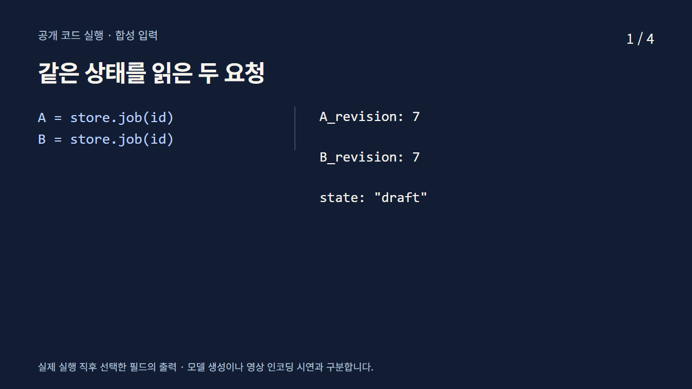
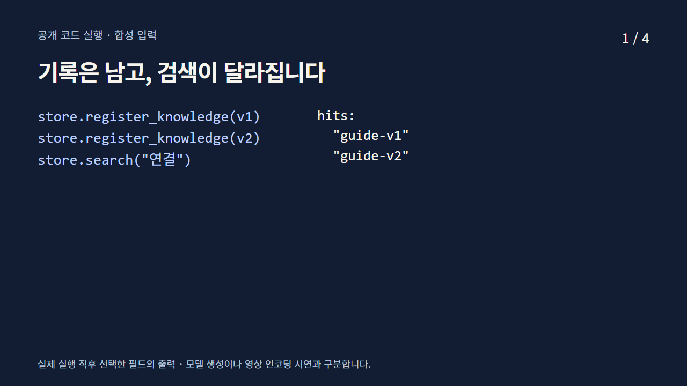
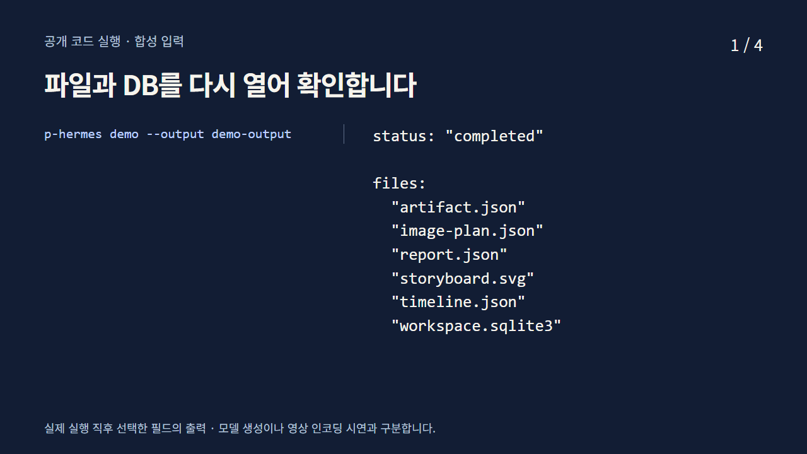
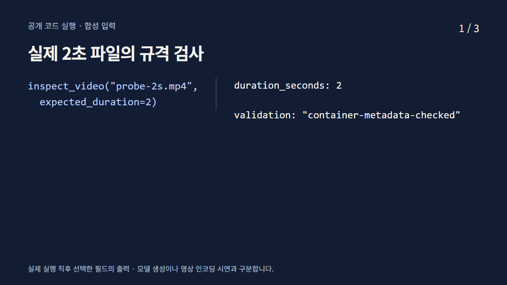

MEDIA READING
영상에서 관찰한
차이를 다시 읽습니다
모든 영상은 음성이 없는 교육 자료입니다.
화면의 문구와 실행 기록을 텍스트로 제공합니다.
같은 세 사진, 다른 시간 배분
A는 전체 제품 4초, 갓 디테일 4초, 마무리 구도 4초입니다. B는 같은 사진을 같은 순서로 사용하며 2초, 6초, 4초로 길이만 바꿉니다. 둘 다 12초이며 움직이는 제품을 생성한 영상은 아닙니다.
A의 3.96초와 4.00초를 멈춰 보면 제품 전체에서 갓 디테일로 컷이 바뀝니다. 시선의 위치와 크기 변화를 관찰하고, 의도한 강조인지 확인합니다.
규격 검사에는 별도의 2초 색상 패턴 파일을 씁니다. 공개 데모가 만드는 5초 시간선 JSON은 인코딩한 영상 파일과 구분합니다.
영상 강의에서 A/B 비교하기 ↗두 요청과 리비전
공개 함수에 합성 입력을 전달하고 반환 직후 녹화한 필드입니다. 아래 텍스트는 녹화의 실행 기록입니다.

1. 실행과 반환값
A = store.job(id)
B = store.job(id){
"A_revision": 7,
"B_revision": 7,
"state": "draft"
}2. 실행과 반환값
store.act(id, A_revision, 'approve', ...){
"revision": 8,
"state": "approved"
}3. 실행과 반환값
store.act(id, B_revision, 'approve', ...){
"error": "stale revision; reload before deciding",
"current_revision": 8
}4. 실행과 반환값
store.act(id, revision, 'revise', plan=new_plan){
"revision": 9,
"state": "draft",
"approved_digest": null
}검색과 기록의 퇴역
공개 함수에 합성 입력을 전달하고 반환 직후 녹화한 필드입니다. 아래 텍스트는 녹화의 실행 기록입니다.

1. 실행과 반환값
store.register_knowledge(v1)
store.register_knowledge(v2)
store.search("연결"){
"hits": [
"guide-v1",
"guide-v2"
]
}2. 실행과 반환값
store.retire_knowledge("guide-v1")
SELECT id, state FROM knowledge{
"records": [
{
"id": "guide-v1",
"state": "retired"
},
{
"id": "guide-v2",
"state": "active"
}
]
}3. 실행과 반환값
store.search("연결"){
"hits": [
"guide-v2"
]
}4. 실행과 반환값
store.search("접속"){
"hits": [],
"method": "literal substring"
}파일과 DB 다시 열기
공개 함수에 합성 입력을 전달하고 반환 직후 녹화한 필드입니다. 아래 텍스트는 녹화의 실행 기록입니다.

1. 실행과 반환값
p-hermes demo --output demo-output{
"status": "completed",
"files": [
"artifact.json",
"image-plan.json",
"report.json",
"storyboard.svg",
"timeline.json",
"workspace.sqlite3"
]
}2. 실행과 반환값
open demo-output/report.json{
"persistent_store": true,
"image_binding_compile": true,
"storyboard_file": true,
"reference_hashes": true,
"model_inference": false,
"video_encoding": false
}3. 실행과 반환값
Store("demo-output/workspace.sqlite3")
reopened.job("studio-demo"){
"state": "completed",
"revision": 3,
"events": [
"create",
"approve",
"start",
"complete"
]
}4. 실행과 반환값
open demo-output/timeline.json{
"duration_seconds": 5,
"validation": "reference-bytes-checked",
"intervals": [
[
0,
2
],
[
2,
5
]
]
}실제 영상 규격 검사
공개 함수에 합성 입력을 전달하고 반환 직후 녹화한 필드입니다. 아래 텍스트는 녹화의 실행 기록입니다.

1. 실행과 반환값
inspect_video("probe-2s.mp4",
expected_duration=2){
"duration_seconds": 2,
"validation": "container-metadata-checked"
}2. 실행과 반환값
inspect_video("probe-2s.mp4",
expected_duration=2){
"codec_name": "h264",
"codec_type": "video",
"width": 1280,
"height": 720,
"r_frame_rate": "25/1"
}3. 실행과 반환값
inspect_video("probe-2s.mp4",
expected_duration=2){
"audio_stream_count": 0,
"sha256": "329081fb66ec0ac0060db76ab2f9cacb07591108697e4ace4adb920c44de80c4"
}